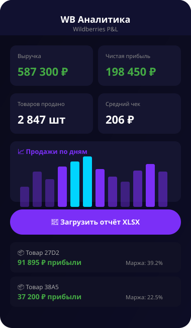
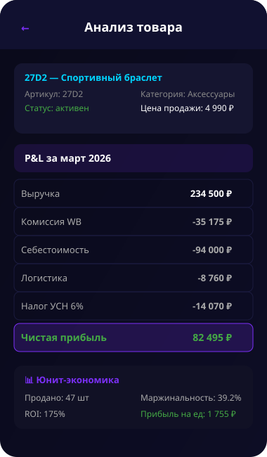
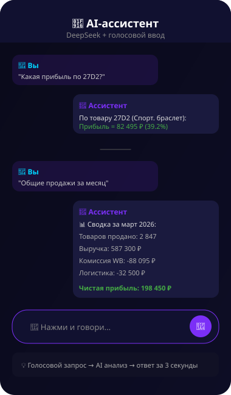

Ты скачиваешь отчёт WB на 2000+ строк. Открываешь Excel. Пытаешься посчитать: сколько я заработал на самом деле? Какой товар тащит бизнес, а какой просто ест деньги? Что будет с маржой, если поднять цену?
3-4 часа ручного труда, куча формул, ошибки в арифметике, путаница с налогами. В итоге ты принимаешь решения на глаз — потому что считать каждый товар вручную просто невозможно.
Загружаешь XLSX-отчёт в Telegram бота или через веб-интерфейс. DeepSeek AI парсит все строки за секунды — и ты получаешь готовую P&L, юнит-экономику по каждому товару, налоги УСН, графики.
Я built это сам — не программист, не заказывал за 200к в агентстве. Просто взял AI и сделал. Потому что предприниматель должен знать цифры своего бизнеса, а не тратить жизнь на Excel.
Любой XLSX — AI разбирает автоматически. Не нужно настраивать форматы.
Выручка → комиссия WB → логистика → себестоимость → налог УСН → чистая прибыль.
Маржинальность, ROI, прибыль на единицу по каждому товару.
Спросил «прибыль по 27D2» — DeepSeek нашёл, посчитал, ответил за 3 секунды.
Продажи по дням, динамика прибыли, структура расходов.
Себестоимость артикулов хранится в БД — не нужно вводить каждый раз.

📊 Дашборд — общая картина бизнеса

🧮 Анализ товара — P&L и метрики

🤖 AI-ассистент (DeepSeek + голос)
Андрей Зарубо
Предприниматель с 4+ годами на Wildberries. Построил AI-инфраструктуру без навыков программиста — от бота до full-stack приложения.